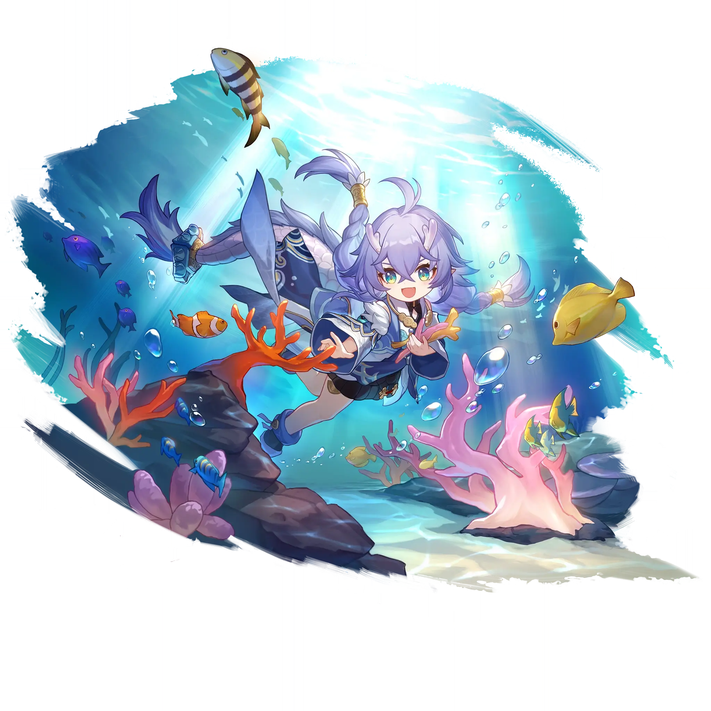

Bailu
Best Bailu build guide for Honkai Star Rail. See Bailu's best Relics, Light Cones, teams, Eidolons, Trace priority, and how to play Bailu.
🔍 Detail Skill
Semua skill aktif dan pasif beserta efeknya.
Deals Lightning DMG equal to #1[i]% of Bailu's ATK to a single enemy.
Heals a single ally for #1[i]% of Bailu's Max HP plus #2[i]. Bailu then heals random allies #4[i] time(s). After each healing, HP restored from the next healing is reduced by #3[i]%.
After an ally with Invigoration is hit, restores the ally's HP for #1[i]% of Bailu's Max HP plus #2[i]. This effect can trigger #5[i] time(s). When an ally receives a killing blow, they will not be knocked down. Bailu immediately heals the ally for #3[i]% of Bailu's Max HP plus #4[i] HP. This effect can be triggered 1 time per battle.
After Technique is used, at the start of the next battle, all allies are granted Invigoration for #1[i] turn(s).
⚔ Light Cone Terbaik
Diurutkan dari yang paling kuat. Persentase menunjukkan performa relatif terhadap pilihan terbaik.
💎 Relic Set Terbaik
Set terbaik untuk karakter ini, diurutkan berdasarkan prioritas.
📊 Stat Utama
Stat yang dicari pada tiap slot.
👥 Tim yang Direkomendasikan
Karakter yang sering dipasangkan bersama Bailu.
 Blade
Blade
 Silver Wolf • Lv. 999
Silver Wolf • Lv. 999
 Sparxie
Sparxie
 Yao Guang
Yao Guang
 Bailu
Bailu
🔗 Lanjutkan
Build ini dirangkum dari Prydwen Institute. Starwise tidak menghitung sendiri. Angka bisa berubah setelah patch atau karakter baru rilis.